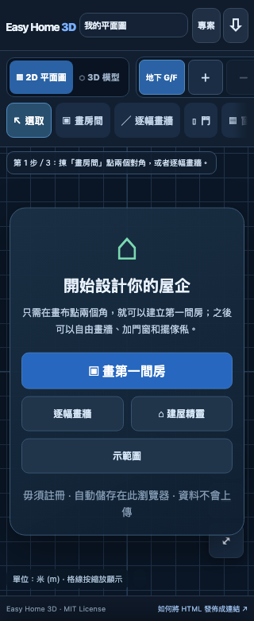
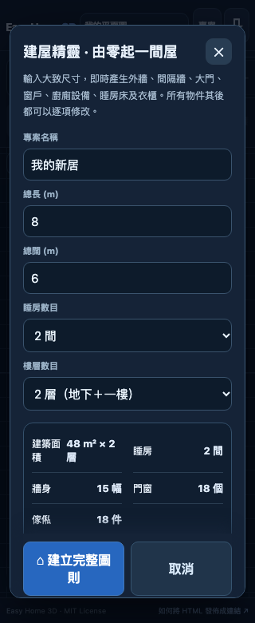
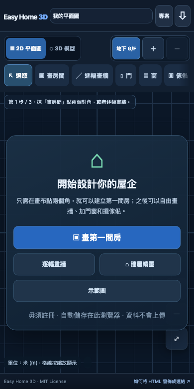
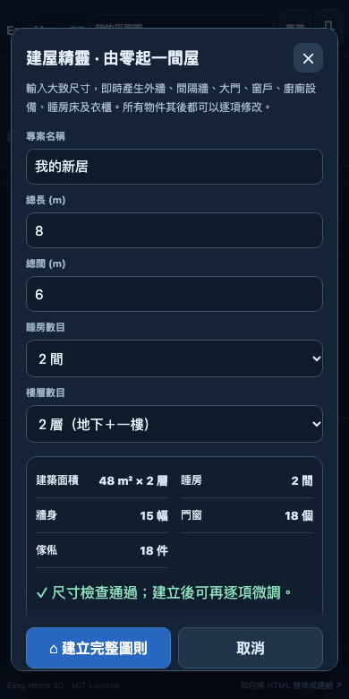
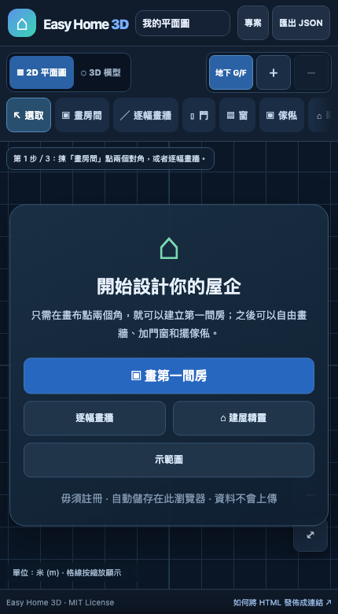
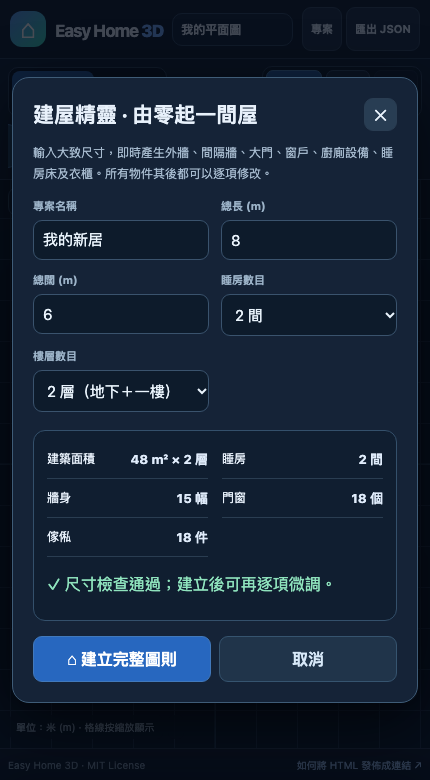
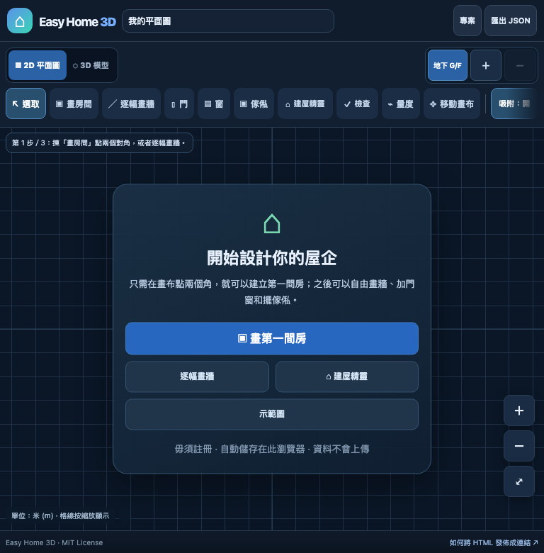
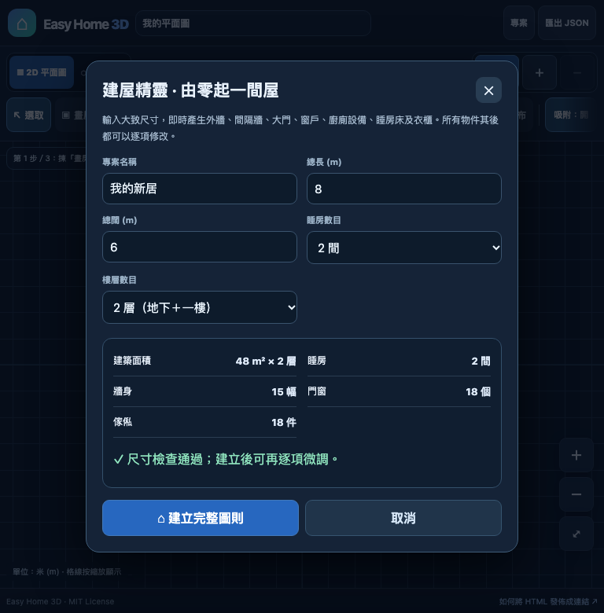

Easy Home 3D · 響應式 UI/UX 驗證
由 320 px 細螢幕 到 1024 px 桌面逐個寬度實測。目標係：主要操作一眼睇到、所有觸控目標至少 44 px、對話框內容同動作鍵唔會跌出畫面、頁面零橫向溢出。
結果：320 / 360 / 375 / 390 / 414 / 430 / 768 / 1024 px 全部零橫向溢出；電話寬度所有工具、樓層制同對話框動作鍵都达到觸控目標尺寸，精靈動作鍵永遠可見。
設計決定
- 兩排工具列：視角＋樓層固定喺第一行，編輯工具放第二行可橫向捲動；右邊漸變提示重有更多工具，唔再將「傢俬／建屋精靈／檢查」藏喺一眼睇唔到嘅位置。
- 真正嘅觸控目標：電話上樓層 tab、＋／－、工具鍵、header 動作鍵一律最少 44 px，符合 Apple HIG／WCAG 2.5.8 方向。
- 對話框：細螢幕改成近乎全高、較大圓角同較少 padding；標題唔再 被折成兩行；「建立圖則／取消」用 sticky 底部，表单幾長都撳到。
- 可讀性：320 px 收窄 onboarding 卡片、放大主要按鈕；精靈預覽 用兩欄迷你統計，減少捲動。
- 尺寸選擇：同時檢查 320（iPhone SE）、360（Android 細機）、390／414／430（主流 iPhone Pro／Plus／Max）同 768（平板直度）。
320 pxoverflow 0 px · tap ≥44 · toolbar scroll
360 pxoverflow 0 px · tap ≥44 · toolbar fit
375 pxoverflow 0 px · tap ≥44 · toolbar fit
390 pxoverflow 0 px · tap ≥44 · toolbar fit
414 pxoverflow 0 px · tap ≥44 · toolbar fit
430 pxoverflow 0 px · tap ≥44 · toolbar fit
768 pxoverflow 0 px · tap ≥44 · toolbar fit
1024 pxoverflow 0 px · tap ≥44 · toolbar fit
逐寬度截圖







